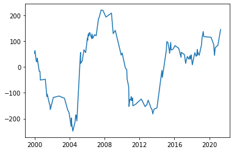

NZ Shoreline Change#
[ ]:
from oceanum.datamesh import Connector
#Put your datamesh token in the Jupyterlab settings, or as argument in the constructor below
datamesh=Connector()
[ ]:
#Get a section of North Island West coast from Pacific Shoreline Change datasource
west_coast_shoreline_change=datamesh.query({
"id": "07efcbda6e9eb824a34fea4531bdf283",
"label": "west coast shoreline change",
"geofilter": {
"geom": [
174.25892988060102,
-38.55237880728947,
175.00085638617804,
-37.471952473445
],
"type": "bbox",
"interp": "linear"
},
"datasource": "nz-shoreline-change",
"description": "Shoreline change around New Zealand"
})
[19]:
west_coast_shoreline_change
[19]:
| region | beach | transect | timestr | longitude | latitude | deltapos | geometry | |
|---|---|---|---|---|---|---|---|---|
| time | ||||||||
| 1999-08-19 21:58:52 | New_Zealand | nzd0212 | 0025 | 1999-08-19 21:58:52+00:00 | 174.785901 | -37.625744 | 92.250399 | POINT (174.78590 -37.62574) |
| 1999-08-19 21:58:52 | New_Zealand | nzd0212 | 0024 | 1999-08-19 21:58:52+00:00 | 174.786241 | -37.626404 | 89.974570 | POINT (174.78624 -37.62640) |
| 1999-08-19 21:58:52 | New_Zealand | nzd0212 | 0023 | 1999-08-19 21:58:52+00:00 | 174.786627 | -37.627046 | 75.279597 | POINT (174.78663 -37.62705) |
| 1999-08-19 21:58:52 | New_Zealand | nzd0212 | 0030 | 1999-08-19 21:58:52+00:00 | 174.784609 | -37.622309 | 31.610087 | POINT (174.78461 -37.62231) |
| 1999-08-19 21:58:52 | New_Zealand | nzd0221 | 0016 | 1999-08-19 21:58:52+00:00 | 174.826096 | -37.746045 | 2.881316 | POINT (174.82610 -37.74605) |
| ... | ... | ... | ... | ... | ... | ... | ... | ... |
| 2021-12-21 20:54:25 | New_Zealand | nzd0205 | 0020 | 2021-12-21 20:54:25+00:00 | 174.732448 | -37.485173 | 59.955158 | POINT (174.73245 -37.48517) |
| 2021-12-21 20:54:25 | New_Zealand | nzd0248 | 0069 | 2021-12-21 20:54:25+00:00 | 174.697054 | -38.156652 | -0.854043 | POINT (174.69705 -38.15665) |
| 2021-12-21 20:54:25 | New_Zealand | nzd0248 | 0068 | 2021-12-21 20:54:25+00:00 | 174.697373 | -38.157314 | -13.996294 | POINT (174.69737 -38.15731) |
| 2021-12-21 20:54:25 | New_Zealand | nzd0212 | 0053 | 2021-12-21 20:54:25+00:00 | 174.777142 | -37.607061 | 30.467133 | POINT (174.77714 -37.60706) |
| 2021-12-21 20:54:25 | New_Zealand | nzd0216 | 0000 | 2021-12-21 20:54:25+00:00 | 174.812262 | -37.685349 | -41.184767 | POINT (174.81226 -37.68535) |
127101 rows × 8 columns
[20]:
west_coast_shoreline_change.plot()
[20]:
<Axes: >
[21]:
#Get one trasect from one beach
transect=west_coast_shoreline_change.loc[(west_coast_shoreline_change['beach']=='nzd0244') & (west_coast_shoreline_change['transect']=='0000')]
[23]:
import matplotlib.pyplot as plt
plt.plot(transect.index,transect.deltapos)
[23]:
[<matplotlib.lines.Line2D at 0x7002335d2890>]

[6]:
transect
[6]:
| region | beach | transect | timestr | longitude | latitude | deltapos | geometry | |
|---|---|---|---|---|---|---|---|---|
| time | ||||||||
| 1999-12-25 21:58:52 | New_Zealand | nzd0244 | 0000 | 1999-12-25 21:58:52+00:00 | 174.780623 | -38.083071 | 52.030379 | POINT (174.78062 -38.08307) |
| 2000-01-10 21:58:52 | New_Zealand | nzd0244 | 0000 | 2000-01-10 21:58:52+00:00 | 174.780525 | -38.083080 | 62.946815 | POINT (174.78053 -38.08308) |
| 2000-02-27 21:58:40 | New_Zealand | nzd0244 | 0000 | 2000-02-27 21:58:40+00:00 | 174.780865 | -38.083047 | 25.022268 | POINT (174.78086 -38.08305) |
| 2000-03-14 21:58:35 | New_Zealand | nzd0244 | 0000 | 2000-03-14 21:58:35+00:00 | 174.780902 | -38.083043 | 20.878013 | POINT (174.78090 -38.08304) |
| 2000-03-30 21:58:33 | New_Zealand | nzd0244 | 0000 | 2000-03-30 21:58:33+00:00 | 174.780910 | -38.083043 | 20.017088 | POINT (174.78091 -38.08304) |
| ... | ... | ... | ... | ... | ... | ... | ... | ... |
| 2020-07-19 22:05:55 | New_Zealand | nzd0244 | 0000 | 2020-07-19 22:05:55+00:00 | 174.780499 | -38.083083 | 65.896766 | POINT (174.78050 -38.08308) |
| 2020-08-04 22:06:23 | New_Zealand | nzd0244 | 0000 | 2020-08-04 22:06:23+00:00 | 174.780686 | -38.083064 | 45.034215 | POINT (174.78069 -38.08306) |
| 2020-09-04 21:38:48 | New_Zealand | nzd0244 | 0000 | 2020-09-04 21:38:48+00:00 | 174.780422 | -38.083090 | 74.446894 | POINT (174.78042 -38.08309) |
| 2020-12-26 22:06:44 | New_Zealand | nzd0244 | 0000 | 2020-12-26 22:06:44+00:00 | 174.780331 | -38.083099 | 84.639287 | POINT (174.78033 -38.08310) |
| 2021-04-16 21:22:35 | New_Zealand | nzd0244 | 0000 | 2021-04-16 21:22:35+00:00 | 174.779791 | -38.083151 | 144.958256 | POINT (174.77979 -38.08315) |
129 rows × 8 columns
[17]:
transect.to_file('/home/dave/Workspace/OCC/points.json')
[ ]: